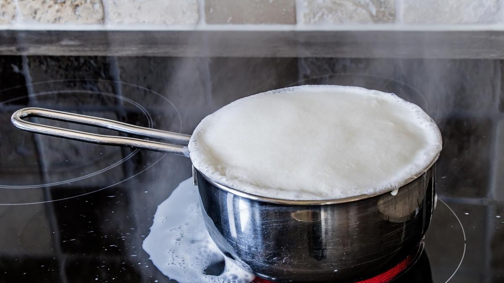
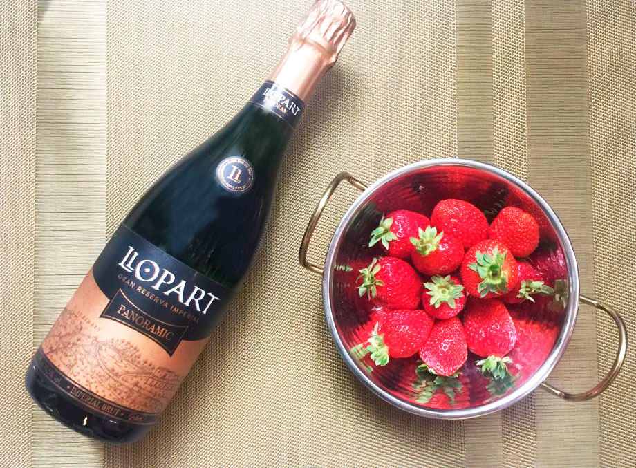
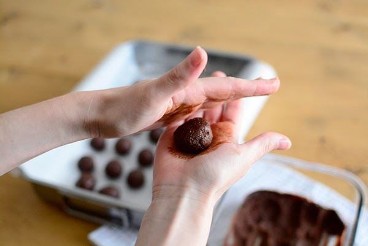
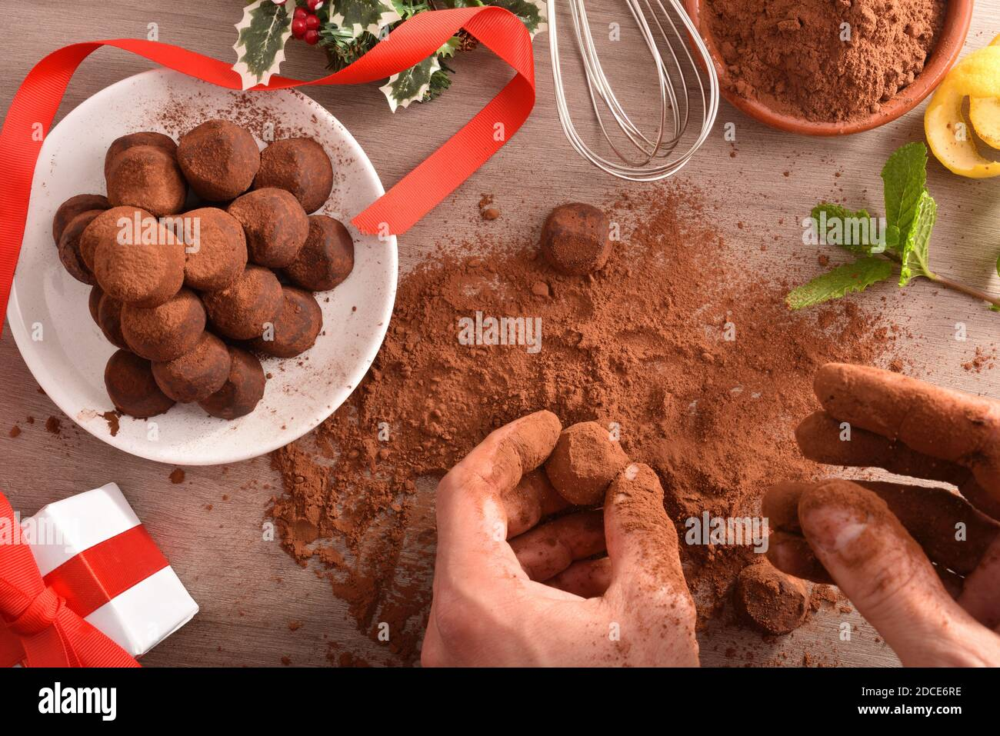

Volver al menu
Crêpes de pollo y espinacas
Ingredientes
- Chocolate negro 70% de cacao 100 g
- Nata líquida 80 ml
- Cava 30 ml
- Azúcar glasé 25 g
- Mantequilla 5 g
- Frambuesas deshidratadas 25 g
- Cacao puro en polvo
Paso a paso
- Calentamos la nata junto al azúcar hasta que hierva. En un cuenco troceamos el chocolate y vertemos la nata caliente por encima mientras removemos con unas varillas para que el chocolate se deshaga completamente. Agregamos la mantequilla y el cava mezclamos totalmente.

- Vertemos la mezcla en una bandeja, echamos la frambuesa, removemos y refrigeramos hasta que la masa se haya endurecido (cuanta más delgada sea la superficie antes se enfría).

- Una vez tengamos la masa cuajada, hacemos bolitas de igual tamaño con una cuchara y damos forma de bolita perfecta con las manos, teniendo cuidado de no dar mucho calor a la masa.

- Por último rebozamos cada trufa en lo que prefiramos: cacao en polvo, virutas, bolitas de anís, etc. Refrigeramos hasta el momento de tomar en un recipiente hermético o túper para que el chocolate no se humedezca.

Resultado Final

Volver a inicio